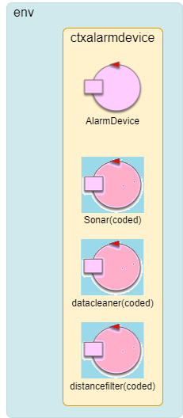
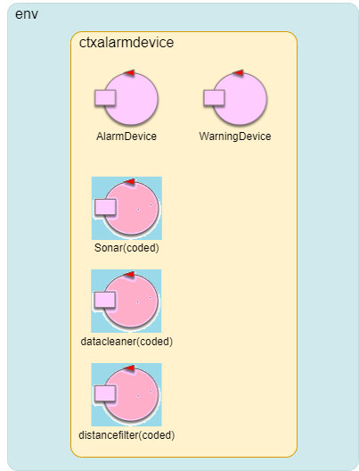
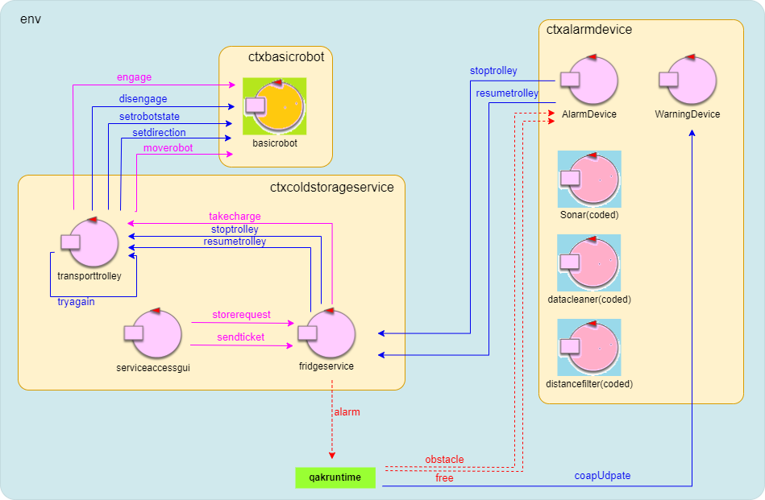

Introduzione
Nello SPRINT1 abbiamo affrontato la creazione del core applicativo del sistema, andando a realizzare un prototipo eseguibile con la seguente architettura:In questo sprint andrò ad affrontare il problema della realizzazione degli alarm requirements.
Requisiti
Nello SPRINT2 ci concentriamo solo sui seguenti requisiti:The system includes a a Sonar and a Led connected to a RaspnerryPi.
The Sonar is used as an ‘alarm device’: when it measures a distance less that a prefixed value DLIMT, the transport trolley must be stopped; it will be resumed when Sonar detects again a distance higher than DLIMT.
The Led is used as a warning devices, according to the following scheme:
the Led is off when the transport trolley is at HOME
the Led blinks while the transport trolley is moving
the Led is on when transport trolley is stopped.
While the transport trolley is moving, the Alarm requirements should be satisfied.
However, the transport trolley should not be stopped if some prefixed amount
of time (MINT msecs) is not passed from the previous stop.
Analisi del problema
KeyPoints - Analisi del problema
- Si realizzano due nuovi componenti del sistema come actor in un contesto distribuito: l'AlarmDevice e il WarningDevice.
- L'AlarmDevice ha il compito di inviare i dispatch di stoptrolley e resumetrolley al ColdStorageService, in base alle informazioni di distanza ricevute da una pipeline di StreamedQActors che filtrano i dati ricevuti da un sonar fisico o simulato.
- Il WarningDevice utilizza l'osservabilità CoaP degli attori per ricevere informazioni sullo stato del TransportTrolley in modo da poter accendere o spegnere un Led fisico o simularlo.
- E' il FridgeService effettivamente ad inviare dispatch di stoptrolley e resumetrolley al TransportTrolley, e ad emettere un evento alarm per fermare il movimento del BasicRobot.
- Si introduce lo stato di stop in cui il TransportTrolley attende un messaggio di resumetrolley per tornare ad eseguire le azioni che stava eseguendo prima di essere stoppato.
Come costruire l'Alarm Device
L' Alarm Device è un'entita che lavora in maniera distribuita in un RaspberryPi che utilizza dispositivi fisici quali Led e Sonar.
L'entità dovrà comunicare con i componenti del sistema già realizzati per permettere di stoppare e riavviare il trolley. Viene quindi naturale continuare con l'ideologia degli Attori
e realizzare il componente come un sistema ad attori che lavora in un contesto differente da quello del ColdStorageService ma che può comunicarci attraverso
scambio di messaggi.
Il committente fornisce del software utile allo sviluppo di questo tipo di sistema. In particolare, il progetto unibo.sonarqak23 fornisce un esempio di base di realizzazione di un sistema
ad attori che cattura dati emessi da un dispositivo SONAR HC-SR04 e li passa attraverso una pipeline di filtraggio
per ottenere poi informazioni utili da poter utilizzare nella logica applicativa del sistema (si veda RaspApplCode.html per ulteriori informazioni).
L'architettura del sistema di allarme può essere riassunta in questo modo:
L'attore Sonar è il componente che raccoglie i dati dal sonar fisico. E' rappresentabile da due tipi di CodedQActor: sonarSimulator, che viene usato per testare l'applicazione in locale e simula la ricezione dei dati dal sonar andando a crearne di sintetici; sonarHCSR04Support23.kt che viene usato nel raspberry e riceve dati dal sonar fisico con cui comunica tramite il programma python sonar.py. Sonar invia i dati al sistema tramite la direttiva emitLocalStreamEvent( event ), che permette di emettere un evento propagato solo agli attori locali che siano ‘registrati’ presso di lui (come ad esempio dataCleaner) mediante il metodo subscribeToLocalActor. L'attore datacleaner è anch'esso un CodedQactor e filtra i dati ricevuti da Sonar (in quanto ci si iscrive con subscribeToLocalActor), andando ad eliminare valori troppo alti o bassi che possono essere considerati come rumore, e emettendo come eventi locali quelli che rimangono. L'attore distancefilter è anch'esso un CodedQactor e filtra i dati ricevuti da datacleaner (in quanto ci si iscrive con subscribeToLocalActor). L'attore emette un evento locale obstacole se la distanza che gli è arrivata è minore di DLIMT, mentre emette l'evento locale free in caso contrario. Infine, l'attore AlarmDevice gestisce la logica di sistema. Crea la pipeline (secondo la logica degli StreamedQActors) tramite sottoscrizione:
{kind=link}
subscribeToLocalActor("distancefilter").subscribeToLocalActor("datacleaner").subscribeToLocalActor("sonar")Come costruire il Warning Device
Un'altro requisito degli Alarm Requirements è quello del WarningDevice. Anche questo componente può essere modellato come un attore nel contesto dell'alarmDevice.
Il WarningDevice sfrutta l'osservabilità CoaP degli attori per andare ad osservare il sistema ColdStorageService:
quando un attore del sistema effettua una updateResource il WarningDevice riceverà un messaggio
Dispatch coapUpdate: coapUpdate(RESOURCE, VALUE)
{kind=link}
Chi stoppa il Transport Trolley ?
I requisiti non esplicitano l'entita che debba stoppare (o riattivare) il Transport Trolley. E' quindi
doveroso chiarire questo dubbio per capire come è meglio procedere.
Con stoppare il Trolley si intende fermare il suo movimento o comunque bloccarlo nello stato corrente (per esempio se sta scaricando il carico non vogliamo che vada nello stato di movimento per bloccarlo).
Questo significa che ci sono due situazioni in cui il trolley può essere stoppato: mentre si sta muovendo; mentre sta eseguendo un azione di carico, scarico, o waiting di richieste.
Per quanto riguarda il movimento, il messaggio di stop deve essere inviato direttamente al BasicRobot, in quanto il Trolley
vede l'intera operazione di movimento come se fosse atomica, non stoppabile. Fortunatamente il BasicRobot divide il movimento richiesto con moverobot in
operazioni elementari (steps), ed è provvisto di un evento chiamato
Event alarm : alarm(X)Dispatch stoptrolley : stoptrolley(ARG)
Dispatch resumetrolley : resumetrolley(ARG)Cambiamenti al ColdStorageService
Ci sono alcuni problemi da affrontare per permettere il corretto funzionamento delle nuove funzionalità nel sistema del ColdStorageService.
Una prima considerazione da fare è che anche se i messaggi di stop e resume devono passare per il FridgeService, questo non è un problema in quanto per
come ho realizzato il sistema il servizio non è mai bloccato in attesa di risposte. Può quindi ricevere ed elaborare gli evenutali messaggi che arrivano dall'AlarmDevice senza
intoppi (anche se prima del messaggio di stop dovessero arrivare molte richieste di deposito al sistema, queste verrebbero comunque gestite molto velocemente e quindi lo stop non deve attendere di essere eseguito).
E' importante che il FridgeService invii il messaggio di stop al Transport Trolley prima di emettere l'evento alarm. Questo
viene fatto perchè in caso contrario il robot potrebbe stopparsi prima del Trolley e inviare la risposta di moverobotfailed che porterebbe il trolley nello stato di failedAction (che serve
per riprovare la mossa non eseguita correttamente), e non è ciò che vogliamo. Se inviamo prima lo stop il Trolley andrà in uno stato di stop dove attenderà di essere riattivato.
La classe enum MoveType deve essere arricchita con nuovi termini, ognuno riguardate l'ultimo stato in cui si è trovato il Trolley:
enum class MoveType {
MOVETOINDOOR,
MOVETOCR,
MOVETOHOME,
WAITREQUEST,
LOADCHARGE,
STORECHARGE
}
Questa aggiunta è necessaria perchè quando il Trolley viene bloccato passerà allo stato di stop dove attende di essere riattivato. Quando viene riattivato deve sapere in
che stato era stato bloccato per poterci tornare.
Nelle transizioni di ogni stato il Transport Trolley deve includere quella relativa al messaggio di stoptrolley, che lo porta allo stato di stop
Si deve introdurre una nuova variabile del Trolley chiamata var stopped : Boolean che è true se il trolley è stato stoppato. Questa variabile permette di non
rieseguire tutte le azioni dello stato in cui è stato stoppato, in quanto se stopped è true, verrà semplicemente messa a false al posto di eseguire le operazioni già
eseguite. E' stata introdotta soprattutto per permettere al Transport Trolley di verificare se ci siano nuove richieste da prendere in carico quando viene stoppato subito
dopo aver depositato il carico precedente.
Questo meccanismo non provoca effetti collaterali negativi nel far ripartire il BasicRobot in caso si stesse muovendo prima dello stop. Infatti, quando il trolley viene riattivato
andrà nello stato di movimento corrispondente (senza rieseguire tutte le operazioni), ed avendo ricevuto un messaggio moverobotfailed si sposterà allo stato failedAction che
farà ritentare il movimento fallito al Robot (Quindi riattivare il Transport Trolley riattiva in maniera implicita anche il BasicRobot).
Architettura logica
L'architettura logica finale ricavata nello SPRINT2 è mostrata nella seguente figura:

{kind=link}
Progettazione - AlarmDevice
I messaggi scambiati dal sistema di alarm sono i seguenti:
//-------------------------Messaggi---------------------------------
Event obstacle : obstacle(D) //emitted as stream by distancefilter
Event free : free(D) //emitted as stream by distancefilter
Dispatch stoptrolley : stoptrolley(ARG) //message sent to fridgeservice to stop trolley
Dispatch resumetrolley : resumetrolley(ARG) //message sent to fridgeservice to resume trolley
Dispatch coapUpdate: coapUpdate(RESOURCE, VALUE)
//------------------------------------------------------------------
SonarSimulator.kt
Classe che simula la ricezione di dati da un sonar e li trasmette alla pipeline.
class sonarSimulator ( name : String ) : ActorBasic( name ) {
init{
//autostart
runBlocking{ autoMsg("simulatorstart","do") }
}
override suspend fun actorBody(msg : IApplMessage){
println("$tt $name | received $msg " )
if( msg.msgId() == "simulatorstart") startDataReadSimulation( )
}
suspend fun startDataReadSimulation( ){
//generate the distances to use (it goes from 80 to 20 and from 20 to 60)
val data = generateSequence(80) { it - 5 }
.takeWhile { it >= 20 }
.toList() +
generateSequence(20) { it + 5 }
.takeWhile { it <= 60 }
.toList()
var i = 0
while( i < 20 ){
val m1 = "distance( ${data.elementAt(i)} )"
i++
val event = CommUtils.buildEvent( name,"sonardistance",m1)
emitLocalStreamEvent( event )
println("$tt $name | generates $event")
//emit(event) //APPROPRIATE ONLY IF NOT INCLUDED IN A PIPE
delay( 1000 )
}
terminate()
}
}
- Questo semplice attore crea dati di distanza sintetici che vanno da 80 a 20 e da 20 a 60 e li emette come eventi locali.
sonarHCSR04Support23.kt
Attore che riceve valori di distanza emessi da un sonar fisico (a cui ci si interfaccia tramite l'applicazione python sonar.py) e li trasmette alla pipeline.
class sonarHCSR04Support23 ( name : String ) : ActorBasic( name ) {
lateinit var reader : BufferedReader
//var coapSupport = javacode.CoapSupport("coap://localhost:8028","ctxsonarresource/sonarresource")
init{
//autostart
runBlocking{ autoMsg("sonarstart","do") }
}
override suspend fun actorBody(msg : IApplMessage){
//println("$tt $name | received $msg " ) //RICEVE GLI EVENTI!!!
if( msg.msgId() == "sonarstart"){
//println("sonarHCSR04Support23 STARTING") //AVOID SINCE pipe ...
try{
//val p = Runtime.getRuntime().exec("sudo ./SonarAlone")
val p = Runtime.getRuntime().exec("python sonar.py")
reader = BufferedReader( InputStreamReader(p.getInputStream() ))
doRead( )
}catch( e : Exception){
println("WARNING: $name does not find low-level code")
}
}
}
suspend fun doRead( ){
var counter = 0
//GlobalScope.launch{ //to allow message handling
GlobalScope.launch{
while( true ){
var data = reader.readLine()
//CommUtils.outyellow("$name with python: data = $data" )
if( data != null ){
try{
val vd = data.toFloat()
val v = vd.toInt()
if( v <= 1000 ){ //A first filter ...
val m1 = "distance( ${v} )"
val event = MsgUtil.buildEvent( "sonarHCSR04Support","sonardistance",m1)
//emit( event ) //should be propagated also to the remote resource
emitLocalStreamEvent( event ) //not propagated to remote actors
CommUtils.outyellow("sonarHCSR04Support23 doRead emits ${counter++}: $event " )
}
}catch(e: Exception){
CommUtils.outred("sonarHCSR04Support23 doRead ERROR: $e " )
}
}
//delay( 250 ) //Avoid too fast generation
}
}
}
}
- La classe effettua un primo filtraggio della distanza prima di emettere un evento locale propagato nella pipeline del sistema.
dataCleaner.kt
Semplice attore che riceve valori emessi dall'attore sonar, li filtra in base ai valori di distanza e li trasmette alla pipeline. li trasmette alla pipeline.
class dataCleaner (name : String ) : ActorBasic( name ) {
val LimitLow = 2
val LimitHigh = 1000
override suspend fun actorBody(msg: IApplMessage) {
if( msg.msgId() != "sonardistance") return
if( msg.msgSender() == name) return //AVOID to handle the event emitted by itself
elabData( msg )
}
suspend fun elabData( msg: IApplMessage){ //OPTIMISTIC
val data = (Term.createTerm( msg.msgContent() ) as Struct).getArg(0).toString()
CommUtils.outyellow("$tt $name | data = $data ")
val Distance = Integer.parseInt( data )
if( Distance > LimitLow AND Distance < LimitHigh ){
emitLocalStreamEvent( msg ) //propagate
val m0 = MsgUtil.buildEvent(name, "sonardata", "distance($data)")
//CommUtils.outgreen("$tt $name | emits = $m0 ")
emit( m0 )
}else{
//CommUtils.outmagenta("$tt $name | DISCARDS $Distance ")
}
}
}
distanceFilter.kt
Semplice attore che riceve valori emessi dall'attore datacleaner e emette un evento obstacle o free in base al valore della distanza ricevuta.
class distanceFilter (name : String ) : ActorBasic( name ) {
val DLIMT = 40
//@kotlinx.coroutines.ObsoleteCoroutinesApi
override suspend fun actorBody(msg: IApplMessage) {
if( msg.msgId() != "sonardata") return
if( msg.msgSender() == name) return //AVOID to handle the event emitted by itself
elabData( msg )
}
suspend fun elabData( msg: IApplMessage ){ //OPTIMISTIC
// if( msg.msgId() == "sonardata" ) return; //avoid ...
val data = (Term.createTerm( msg.msgContent() ) as Struct).getArg(0).toString()
val Distance = Integer.parseInt( data )
/*
* Emit a sonarRobot event to test the behavior with MQTT
* We should avoid this pattern
*/
//val m0 = MsgUtil.buildEvent(name, "sonardata", "distance($data)")
// CommUtils.outgreen("$tt $name | emits = $m0 ")
//emit( m0 )
if( Distance > 0 AND Distance < DLIMT ){
val m1 = MsgUtil.buildEvent(name, "obstacle", "obstacle($data)")
//CommUtils.outgreen("$tt $name | emitLocalStreamEvent m1= $m1")
emitLocalStreamEvent( m1 ) //propagate event obstacle
}else{
val m2 = MsgUtil.buildEvent(name, "free", "free($data)")
//CommUtils.outgreen("$tt $name | emitLocalStreamEvent m2= $m2")
emitLocalStreamEvent( m2 ) //propagate event free
}
}
}
AlarmDevice
Attore che crea li pipeline di filtering delle distanze e invia i messaggi di stop e resume al ColdStorageService
QActor alarmdevice context ctxalarmdevice{
[# val MINT = 5 //seconds to wait before robot can be stopped again
var stopped: Boolean = false //true if the robot is stopped
var lastStopped = System.currentTimeMillis() //when the robot got stopped the last time
#]
State s0 initial{
println("$name - START") color cyan
[# subscribeToLocalActor("distancefilter").subscribeToLocalActor("datacleaner").subscribeToLocalActor("sonar") #]
}
Goto work
State work{
updateResource [# "sonar23 waiting ..." #]
}
Transition t0 whenEvent obstacle -> handleobstacle
whenEvent free -> handlefree
State handleobstacle{
onMsg( obstacle : obstacle(D)){
[# val elapsedTime = (System.currentTimeMillis() - lastStopped) / 1000 //elapsed time in seconds #]
if [# elapsedTime > MINT && !stopped #] {
println("$name - distance is: ${payloadArg(0)}, sending STOP message") color red
forward fridgeservice -m stoptrolley : stoptrolley(stop)
[# stopped = true
lastStopped = System.currentTimeMillis()
#]
updateResource [# "alarmdevice(stop)" #]
}
else {
if [# stopped #] {
//println("$name - trolley already stopped") color cyan
}
else {
println("$name - $MINT seconds have to pass before stopping again") color cyan
updateResource [# "alarmdevice(nostop)" #]
}
}
}
}
Goto work
State handlefree{
onMsg( free : free(D)){
if [# stopped #] {
[# stopped = false #]
println("$name - distance is: ${payloadArg(0)}, sending RESUME message") color red
forward fridgeservice -m resumetrolley : resumetrolley(resume)
updateResource [# "alarmdevice(resume)" #]
}
}
}
Goto work
}
- Nello stato s0 si crea la pipeline di filtering delle informazioni ricevute dal sonar.
- In work si attende l'arrivo di uno dei due eventi obstacle e free. Se arriva obstacle si va nello stato handleobstacle, altrimenti in handlefree.
- In handleobstacle si controlla se il trolley non è già stoppato (variabile stopped a true) e se sono passati MINT secondi prima dell'ultimo stop. In caso positivo si invia il dispatch stoptrolley al fridgeservice.
- In handlefree si cambia il valore della variabile stopped e si invia un messaggio resumetrolley al fridgeservice.
WarningDevice
Attore che osserva il sistema ColdStorageService e accende e spegne un Led in base allo stato del trolley.
QActor warningdevice context ctxalarmdevice {
[# var process = Runtime.getRuntime().exec("python LedOff.py") #]
State s0 initial {
println("$name - START") color magenta
observeResource transporttrolley
observeResource fridgeservice
}
Goto observing
State observing{
}
Transition t0 whenMsg coapUpdate -> doObserve
State doObserve{
onMsg(coapUpdate : coapUpdate(transporttrolley, ARG)){
[# var Message : String = "${payloadArg(1)}"
var Payload : String = SystemUtilities.getPayloadArgs(Message)[0]
#]
if [# Payload == "waitingRequest" || Payload == "atHome"#] {
println("$name - LED OFF") color magenta
[#
process.destroy()
process = Runtime.getRuntime().exec("python LedOff.py")
#]
updateResource [# "warningdevice(off)" #]
}
if [# Payload == "movingToIndoor" || Payload == "loadingCharge" ||
Payload == "chargeTaken" || Payload == "movingToColdRoom"|| Payload == "depositingLoad"
|| Payload == "MovingToHome" #] {
println("$name - LED BLINKING") color magenta
[#
process.destroy()
process = Runtime.getRuntime().exec("python LedBlink.py")
#]
updateResource [# "warningdevice(blink)" #]
}
}
onMsg(coapUpdate : coapUpdate(fridgeservice, ARG)){
[# var Message : String = "${payloadArg(1)}"
var Payload : String = SystemUtilities.getPayloadArgs(Message)[0]
#]
if [# Payload == "stoppingTrolley"#] {
println("$name - LED ON") color magenta
[#
process.destroy()
process = Runtime.getRuntime().exec("python LedOn.py")
#]
updateResource [# "warningdevice(on)" #]
}
if [# Payload == "resumingTrolley"#] {
println("$name - LED BLINKING") color magenta
[#
process.destroy()
process = Runtime.getRuntime().exec("python LedBlink.py")
#]
updateResource [# "warningdevice(blink)" #]
}
}
}
Goto observing
}
- Nello stato s0 l'attore inizia ad osservare il TransportTrolley e il FridgeService. Va poi allo stato Observing dove attende un messaggio di coapUpdate per andare nello stato doObserve
- Nello stato doObserve si controlla il payload del messaggio coap arrivato e si aggiorna il led andando ad attivare il codice python relativo allo stato in cui il led si deve trovare in base al messaggio arrivato. Il warningDevice effettua anche delle updateResource per far conoscere lo stato del led e per essere utilizzato in sistemi di testing.
sonar.py
Codice python per attivare il sonar fisico e ottenerne valori di distanza.
GPIO.setmode(GPIO.BCM)
GPIO.setwarnings(False)
TRIG = 17
ECHO = 27
GPIO.setup(TRIG,GPIO.OUT)
GPIO.setup(ECHO,GPIO.IN)
GPIO.output(TRIG, False) #TRIG parte LOW
#print ('Waiting a few seconds for the sensor to settle')
time.sleep(2)
while True:
GPIO.output(TRIG, True) #invia impulsoTRIG
time.sleep(0.00001)
GPIO.output(TRIG, False)
#attendi che ECHO parta e memorizza tempo
while GPIO.input(ECHO)==0:
pulse_start = time.time()
# register the last timestamp at which the receiver detects the signal.
while GPIO.input(ECHO)==1:
pulse_end = time.time()
pulse_duration = pulse_end - pulse_start
distance = pulse_duration * 17165 #distance = vt/2
distance = round(distance, 1)
#print ('Distance:',distance,'cm')
print ( distance, flush=True )
time.sleep(0.25)
#GPIO.cleanup()
LedOn.py
Codice python per accendere un led fisico
GPIO.setmode(GPIO.BCM)
GPIO.setup(25,GPIO.OUT)
try:
GPIO.output(25,GPIO.HIGH)
except:
print("LedDevice | An exception occurred")
LedOff.py
Codice python per accendere un led fisico
GPIO.setmode(GPIO.BCM)
GPIO.setup(25,GPIO.OUT)
try:
GPIO.output(25,GPIO.LOW)
except:
print("LedDevice | An exception occurred")
LedBlink.py
Codice python per accendere un led fisico
GPIO.setmode(GPIO.BCM)
GPIO.setup(25,GPIO.OUT)
try:
while True:
GPIO.output(25,GPIO.HIGH)
time.sleep(0.5)
GPIO.output(25,GPIO.LOW)
time.sleep(0.5)
except:
print("LedDevice | An exception occurred")
Progettazione - ColdStorageService
I messaggi scambiati dal sistema ColdStorageService sono i seguenti:
//-------------------------Messaggi---------------------------------
Event alarm : alarm(X) //stoppa il basicrobot
Dispatch stoptrolley : stoptrolley(ARG) //message sent from AlarmDevice to fridgeservice to stop trolley
Dispatch resumetrolley : resumetrolley(ARG) //message sent from AlarmDevice to fridgeservice to resume trolley
//------------------------------------------------------------------
ServiceAccessGUI
La ServiceAccessGUI è rimasta invariata rispetto allo SPRINT1.
FridgeService
I cambiamenti effettuati al FridgeService rispetto allo SPRINT1 sono:
State waitRequest{
println("$name - waiting for requests...") color blue
updateResource [# "fridgeservice(waitingRequests)" #]
}
Transition t0 whenRequest storerequest -> handleRequest
whenRequest sendticket -> handleTicket
whenMsg stoptrolley -> handleStop
whenMsg resumetrolley -> handleStop
State handleStop{
onMsg(stoptrolley: stoptrolley(ARG)){
println("$name - Stopping the trolley") color blue
forward transporttrolley -m stoptrolley: stoptrolley(ARG) //first we stop the trolley
delay 100
emit alarm : alarm(X) //then we stop the basicrobot
updateResource [# "fridgeservice(stoppingTrolley)" #]
}
onMsg(resumetrolley: resumetrolley(ARG)){
println("$name - Resuming the trolley") color blue
forward transporttrolley -m resumetrolley: resumetrolley(ARG)
updateResource [# "fridgeservice(resumingTrolley)" #]
}
}
Goto waitRequest
- Dallo stato waitRequest il fridgeservice può ora passare allo stato handleStop nel caso in cui gli arrivino i dispatch di stoptrolley o resumetrolley
- Nello stato handleStop se il messaggio arrivato è stoptrolley si invia un dispatch di stoptrolley al Trolley, si attende una frazione di secondo e si invia l'evento alarm per far stoppare il BasicRobot. Se il messaggio arrivato è resumetrolley si inoltra il messaggio al Trolley
TransportTrolley
QActor transporttrolley context ctxcoldstorageservice{
[# var LastAction = MoveType.MOVETOINDOOR //last action tried
var FailedCounter = 0 //number of failed moves
var Stopped : Boolean = false //whether or not the trolley is stopped
#]
State s0 initial{
println("$name - START, engage basicrobot") color green
request basicrobot -m engage: engage(transporttrolley,330)
}
Transition s0 whenReply engagedone -> waitRequest
whenReply engagerefused -> s0
State waitRequest {
if [# Stopped #] { [# Stopped = false #] } else {
forward basicrobot -m setrobotstate : setpos(0,0,down) //just to be sure
}
println("$name - waiting for a request...") color green
updateResource [# "transporttrolley(waitingRequest)" #]
[# LastAction = MoveType.WAITREQUEST #]
}
Transition t0 whenMsg stoptrolley -> stop
whenRequest takecharge -> moveToIndoor
State moveToIndoor {
if [# Stopped #] { [# Stopped = false #] } else {
onMsg( takecharge : takecharge(TICKET) ){
[# val Ticket="${payloadArg(0)}" #]
println("$name - moving to INDOOR to take charge of ticket $Ticket") color green
updateResource [# "transporttrolley(movingToIndoor)" #]
}
[# LastAction = MoveType.MOVETOINDOOR #]
request basicrobot -m moverobot : moverobot (0,4) //(0,4) position of INDOOR in the map
}
}
Transition t0 whenMsg stoptrolley -> stop
whenReply moverobotdone -> loadTheCharge
whenReply moverobotfailed -> failedAction
State loadTheCharge{
if [# Stopped #] { [# Stopped = false #] } else {
println("$name - loading charge ...") color green
updateResource [# "transporttrolley(loadingCharge)" #]
delay 4000 //simulate the loading
println("$name - taken charge of the load ...") color green
updateResource [# "transporttrolley(chargeTaken)" #]
replyTo takecharge with chargetaken: chargetaken(ARG) caller== fridgeservice
[# LastAction = MoveType.LOADCHARGE #]
}
}
Transition t0 whenTime 50 -> moveToColdRoom
whenMsg stoptrolley -> stop
State moveToColdRoom{
if [# Stopped #] { [# Stopped = false #] } else {
println("$name - moving to ColdRoom ...") color green
updateResource [# "transporttrolley(movingToColdroom)" #]
[# LastAction = MoveType.MOVETOCR #]
request basicrobot -m moverobot: moverobot(4,3) //(4,3) position of PORT of coldroom
}
}
Transition t0 whenMsg stoptrolley -> stop
whenReply moverobotdone -> storeTheCharge
whenReply moverobotfailed -> failedAction
State storeTheCharge{
if [# Stopped #] { [# Stopped = false #] } else {
println("$name - depositing load ...") color green
updateResource [# "transporttrolley(depositingLoad)" #]
delay 4000 //simulate the deposit
println("$name - load deposited ...") color green
[# LastAction = MoveType.STORECHARGE #]
}
}
Transition t0 whenTime 1000 -> moveToHome
whenMsg stoptrolley -> stop
whenRequest takecharge -> moveToIndoor
State moveToHome{
if [# Stopped #] { [# Stopped = false #] } else {
println("$name - No more requests, moving to home ...") color green
updateResource [# "transporttrolley(movingToHome)" #]
[# LastAction = MoveType.MOVETOHOME #]
request basicrobot -m moverobot: moverobot (0,0) //(0,0) position of HOME
}
}
Transition t0 whenMsg stoptrolley -> stop
whenReply moverobotdone -> trolleyAtHome
whenReply moverobotfailed -> failedAction
State trolleyAtHome{
println("$name - trolleyAtHome ... ") color green
updateResource [# "transporttrolley(atHome)" #]
forward basicrobot -m setdirection : dir(down)
delay 1000 //To avoid interrupt of plan related to setDirection
}
Goto exitSystem
State failedAction{
[# FailedCounter += 1 #]
println("$name - The last action (${LastAction.name}) failed, trying again") color green
forward transporttrolley -m tryagain : tryagain(ARG)
}
Transition t0
whenMsg tryagain and [# FailedCounter >= 10 #] -> exitSystem
whenMsg tryagain and [# LastAction == MoveType.MOVETOINDOOR #] -> moveToIndoor
whenMsg tryagain and [# LastAction == MoveType.MOVETOCR #] -> moveToColdRoom
whenMsg tryagain and [# LastAction == MoveType.MOVETOHOME #] -> moveToHome
State stop{
onMsg(stoptrolley: stoptrolley(ARG)){
[# Stopped = true #]
println("$name - STOPPED, waiting to be resumed") color green
updateResource [# "transporttrolley(stopped)" #]
}
}
Transition t0
whenMsg resumetrolley and [# LastAction == MoveType.WAITREQUEST #] -> waitRequest
whenMsg resumetrolley and [# LastAction == MoveType.MOVETOINDOOR #] -> moveToIndoor
whenMsg resumetrolley and [# LastAction == MoveType.LOADCHARGE #] -> loadTheCharge
whenMsg resumetrolley and [# LastAction == MoveType.MOVETOCR #] -> moveToColdRoom
whenMsg resumetrolley and [# LastAction == MoveType.STORECHARGE #] -> storeTheCharge
whenMsg resumetrolley and [# LastAction == MoveType.MOVETOHOME #] -> moveToHome
State exitSystem {
onMsg( tryagain : tryagain(ARG)){
println("$name - Too many fails, exiting the system") color green
}
forward basicrobot -m disengage : disengage(transporttrolley)
println("$name - disengaged") color green
delay 1000 //avoid to premature abort of connection
[# System.exit(0) #]
}
}
- Tutti gli stati del Trolley che riguardano le azioni del robot ora hanno una transizione allo stato stop nel caso in cui arrivi il messaggio stoptrolley. Inoltre, gli stessi stati hanno anche un check iniziale che fa eseguire le operazioni dello stato solo se il trolley non era stato stoppato.
- Nello stato stop il trolley attende di essere riattivato. In base all'azione che stava eseguendo prima di essere stoppato, il trolley effettuerà una transizione a uno degli stati elencati quando riceve un messaggio di resumetrolley.
Piani di testing
I test hanno la stessa struttura di osservatori CoaP che hanno nello SPRINT1. Per effettuare i test si è realizzata una variante del modello del coldstorage (ColdStorageServiceModelTest.qak) in cui l'unica differenza è che la ServiceAccessGUI non invia nessun messaggio in maniera automatica (non simula l'interazione con il driver), in modo che possiamo usare un test class per inviare e ricevere messaggi. E' stata realizzata anche una variante del modello dell'alarmdevice (AlarmDeviceModelTest.qak) in cui si usa il simulatore del sonar come attore sonar e gli indirizzi del coldstorageservice sono locali. Al fine di testare il corretto funzionamento del sistema, sono stati introdotti i seguenti piani di testing, il primo realizzato per testare il ColdStorageService e il secondo per testare l'AlarmDevice:- TestStopResume: Test del normale funzionamento del sistema con comandi di stop e resume inviati dall'applicazione di test (si simula l'alarmdevice). Si invia una richiesta che non sfori il limite massimo della coldRoom e si verifica che il ticket venga accettato e che il trolley ritorni correttamente nella home al termine dell'azione di deposito. Nel mentre vengono inviati messaggi di stop e resume per verificare che funzioni tutto comunque.
@Test
fun testRequestAccepted() {
val conn: Interaction = ConnectionFactory.createClientSupport23(
ProtocolType.tcp, "localhost", "9990")
println("TestApplication - Sending store request of 30 kg")
val storeRequest: IApplMessage = CommUtils.buildRequest("testApplication", "storerequest", "storerequest(30)", "fridgeservice")
val storeReply: IApplMessage? = conn.request(storeRequest)
val ticket: String = getPayloadArgs(storeReply?.msgContent())[0]
//If everything goes as it should, the reply to the storerequest will be loadaccepted
Assert.assertEquals("loadaccepted", storeReply?.msgId())
println("TestApplication - Simulating going to indoor to send ticket")
CommUtils.delay(4000)
conn.forward("msg(sendticket,request,testApplication,fridgeservice,sendticket("+ticket+"),1)")
//Send stop message
CommUtils.delay(1000)
conn.forward("msg(stoptrolley,dispatch,testApplication,fridgeservice,stoptrolley(stop),1)")
//if got stopped correctly the service sent a stop message and the trolley is in stop state
CommUtils.delay(1000)
assertTrue("stoppingTrolley" in fridgeContentList)
assertTrue("stopped" in trolleyContentList)
//send resume
CommUtils.delay(1000)
conn.forward("msg(resumetrolley,dispatch,testApplication,fridgeservice,resumetrolley(resume),1)")
//if got resumed correctly the service sent a resume message
CommUtils.delay(1000)
assertTrue("resumingTrolley" in fridgeContentList)
//wait for the "at home" response of the robot
var limit = 0
while ( "atHome" !in trolleyContentList AND limit < 15){
limit += 1
CommUtils.delay(2000)
}
//if everything goes as it should, the robot must reach home when it finishes
assertTrue("atHome" in trolleyContentList)
}
- All'inizo del test si crea una connessione TCP con il contesto del ColdStorageService.
- Poi si crea e invia la richiesta storeRequest per un carico di 30kg, e si attende la risposta del sistema con il ticket da inserire. Poi si fa il check della risposta, che dovrebbe essere loadaccepted.
- In seguito si aspetta una quantità di tempo (minore del tempo massimo per inserire un biglietto) per simulare l'arrivo nella INDOOR e si invia una nuova richiesta sendticket al sistema.
- Si aspetta un secondo e si simula l'invio di un messaggio stoptrolley da parte dell'alarmdevice. Se lo stop ha funzionato l'updateResource che il trolley chiama quando è nello stato di stop e quello che il fridge service chiama quando il stoppa il robot dovrebbero essere presenti nelle relative ContentList.
- Si aspetta un secondo e si simula l'invio di un messaggio resumetrolley da parte dell'alarmdevice. Se la resume ha funzionato l'updateResource che il fridgeservice chiama quando riattiva il trolley deve essere presente nella fridgeContentList.
- Infine si attende in un ciclo while che la test application riceva il messaggio "at home", che viene inviato dal TransportTrolley quando tutte le richieste sono state eseguite e il trolley è tornato nella HOME. Quindi se entro un certo tempo massimo questo messaggio arriva, significa che l'azione di deposito si è conclusa correttamente (e che quindi il trolley è stato riattivato e di conseguenza anche il BasicRobot).
- TestStopResumeAlarm: Si testa il sistema AlarmDevice in locale per verificare che i messaggi di stop/resume vengano inviati correttamente e che il led si accenda quando si invia un segnale di stop. Si testa inoltre che il messaggio di stop non deve essere inviato se non sono passati almeno MINT secondi dall'ultimo stop. Per effettuare questo test ho cambiato leggermente la classe sonarSimulator in modo che invii distanze che arrivano sotto il limite DLIMIT 2 volte, ma la seconda volta ci arriva in un tempo minore di MINT, in modo da effettuare le giuste verifiche.
@Test
fun testStartStopAlarm() {
//wait for the "nostop" response of the alarm
var limit = 0
while ( "nostop" !in alarmContentList AND limit < 15){
limit += 1
CommUtils.delay(2000)
}
Assert.assertTrue("stop" in alarmContentList)
Assert.assertTrue("resume" in alarmContentList)
Assert.assertTrue("on" in warningContentList)
Assert.assertTrue("nostop" in alarmContentList)
//if everything goes as it should, the alarmContentlist should contain 1 time the stop message
var count1 = alarmContentList.count { it == "stop" }
Assert.assertEquals(1, count1)
//if everything goes as it should, the alarmContentlist should contain 1 time the nostop message
var count2 = alarmContentList.count { it.contains("nostop") }
Assert.assertEquals(1, count2)
//if everything goes as it should, the alarmContentlist should contain 1 time the resume message
var count3 = alarmContentList.count { it.contains("resume") }
Assert.assertEquals(1, count3)
//if everything goes as it should, the warningContentlist should contain 1 time the on message
var count4 = warningContentList.count { it.contains("on") }
Assert.assertEquals(1, count4)
}
- Il test fa semplicemente partire il sistema (si suppone che il ColdStorageService sia attivato) e attende che arrivi il messaggio nostop. Questo messaggio viene inviato dall' AlarmDevice se si cerca di stoppare il Trolley prima del tempo MINT.
- Poi si verifica che i messaggi stop,resume,on,nostop siano presenti nella lista dei messaggi ricevuti dall'osservatore coap. In particolare, stop (che è inviato dal alarmDevice quando invia un messaggio di stoptrolley) dovrà essere presente una volta nella lista, resume (che è inviato dal alarmDevice quando invia un messaggio di resumetrolley) dovrà essere presente una volta nella lista, on (che è inviato dal warningDevice quando accende il led) dovrà essere presente una volta nella lista, e lo stesso vale per nostop.